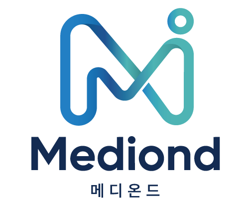

Mediond는 의료의 전문성을 기반으로,
병원의 성장과 매출 구조를 그 너머까지 확장하는
B2B 메디컬 성장 브랜드입니다.
BRAND NAME

BRAND STORY
병원장을 만나면, 늘 같은 이야기를 들었습니다. ‘광고는 충분히 하고 있는데, 매출이 늘지 않습니다.’ 문제는 광고의 양이 아니라, 광고 이후의 매출 구조였습니다.
광고비를 늘리면 처음엔 문의가 늘어납니다. 하지만 어느 시점부터, 광고비를 두 배로 늘려도 매출은 같은 자리에 멈춥니다. 이유는 단순합니다. 광고 ‘이후’의 구조 — 홈페이지의 신뢰, 상담의 흐름, 내원의 전환, 재방문의 관리 — 가 광고 속도를 못 따라가기 때문입니다.
매출이 안정적인 병원은 광고를 잘하는 병원이 아닙니다. 광고 이후의 흐름이 시스템으로 정리되어 있는 병원입니다. 환자 한 명이 어떻게 유입되고, 어떻게 상담을 받고, 어떻게 내원하고, 어떻게 다시 오는지 — 매출이 만들어지는 흐름이 머릿속이 아니라 시스템 위에 있습니다.
광고가 필요하다면, 시스템 안에서 운영합니다. 콘텐츠가 필요하다면, 시스템 안에서 만듭니다. 리포트가 필요하다면, 시스템에서 다음 액션을 함께 정합니다. ‘무엇을 더 할까’가 아니라 ‘무엇이 매출에 기여하는가’를 기준으로 일합니다.
Mediond는 광고비를 더 쓰자고 먼저 제안하지 않습니다. 진단 결과 광고비가 과한 경우, 줄여드리는 것이 먼저입니다. 새로운 매체를 권하지 않고, 이미 쓰고 있는 매체의 매출 기여 구조부터 정리합니다. 조용한 전문가처럼, 일이 보이지 않게 정리되어 있는 상태를 만드는 것이 목표입니다.
POSITIONING
‘어떤 매체를 더 살까’가 아니라, ‘어디서 매출이 새고 있는가’부터 시작합니다.
1인 병원과 5년 차 병원은 다릅니다. 단계에 맞춰 필요한 모듈부터 가볍게 시작합니다.
클릭·노출 보고가 아니라, 어떤 흐름이 매출을 만들었는지로 리포트합니다.
장기 묶음 계약을 강요하지 않습니다. 시스템이 매달 한 칸씩 좋아지는 관계를 만듭니다.
DIFFERENCE
BRAND TONE
Mediond는 화려한 마케팅 카피로 설득하지 않습니다. 말은 어렵게 하지 않고, 구조는 전문적으로 정리되어 있는 — 그런 상태를 지향합니다.
병원장이 봤을 때 ‘믿고 맡길 수 있는 조용한 전문가’ 같은 신뢰감을 가장 중요하게 여깁니다. 디자인도, 문서도, 리포트도 모두 같은 톤으로 정렬되어야 합니다.
첫 진단은 무료입니다. 7일 이내 진단 리포트를 보내드립니다.